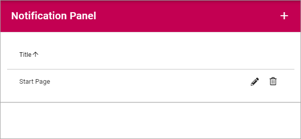
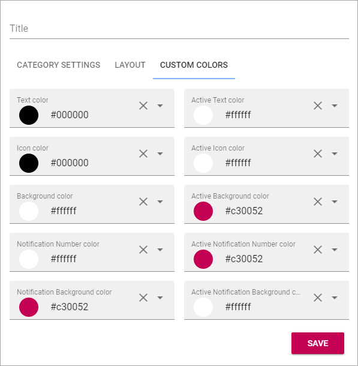

Notification Panel¶
The Notification Panel is a concept in Omnia. The purpose is to help end users find out what information has been updated within different areas of the intranet.
A Notification Panel can be placed on any page, or in the Action Manu, to show different notifications. You can create several Notification Panels for different purposes.
Create a new Notification Panel¶
To create a new Notification Panel, do the following:
- Click the plus.
- Use the following settings:

- Title: You can add a block title here if you wish. Note the setting to show the title or not (see below under Layout).
- Add Category: Click here to add a new Category.
- Category Title: Add a Title for the new Category. You can add titles for all active languages.
- Icon Type: Select an Icon Type.
- Icon: Choose the Icon in the Icon Type you have selected.
- View Control: Here you select what you will display in the Category. See below, under Category settings for more information.
- Notification: Select Automatic or Custom for the Category.
- Click “ADD” to create the Category.
- Click the cog wheel to access the settings for the Category, for example.
Category settings¶
The settings for a Category is the same as the settings for the corresponding Block, see:
Announcements: The Announcements block
Calendar Rollup: The Calendar Rollup block
Document Rollup: The Document Rollup block
HTML Scripts: The HTML Scripts block
My Tasks: The Tasks Rollup block
Page Rollup: The Pages Rollup block
People Rollup: The People Rollup block
RSS Reader: The RSS Reader block
Team News Rollup: The Team News Rollup block
Trello Card Rollup: (Linke to be added).
Layout¶
Here you can set the following:

- Show icon: To show an icon for each category, select this option (Default=selected).
- Show label: To show the label for each category, select this option (Default=deselected).
- Categories per row: Set the number of categories to be shown per row. If more categories are shown a new row will be added automatically. 0 means any number of categories on one row.
- Show block title: (This option has now actual function at the moment).
- Color and Background color: Default settings for block heading are set in Omnia Admin. Color and Background color kan be changed here.
- Padding: Some padding between the block border and the content can be set here.
- Margin: (This option has now actual function at the moment).
Custom colors¶
Default colors are set in Omnia Admin. Custom colors for different parts of the Notification Panel can be set here.
